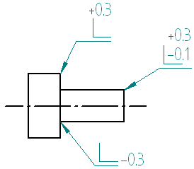
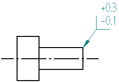

Edge Condition command
Places an edge condition symbol on an element.
You can use the edge condition annotation to designate special finishing instructions for part edges, such as where materials may cause hazardous handling conditions or where they require special machining for a precise fit. Some examples include burr removal, sheet flatness, chip removal, material thinning, weld slag and spatter removal, and whether a sheared edge should be squared.
You can use the tolerance fields in the Edge Condition Properties dialog box to specify values, such as the minimum and maximum allowable distance that material may extend beyond an edge, or a maximum material thickness that may be removed.
You can place edge condition symbols using the current or previous ISO/DIN standard for edge condition symbols.
Current ISO/DIN edge condition symbol examples:

Previous ISO/DIN edge condition symbol example:

You set the edge condition symbol standard on the Drawing Standards page of the Solid Edge Options dialog box.